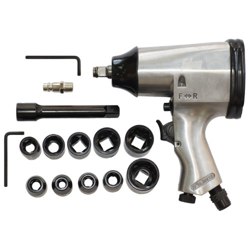

Каталог
Гайковерт пневматический ударный Fubag Pw158/312
Пневмогайковерт FUBAG PW158/312 100109 предназначен для работ с высоконагруженными соединениями благодаря высокому значению крутящего момента в 312 Нм.
Подробное описание товараШлифмашина эксцентриковая пневматическая Sumake ST-7715Р

Пневмоорбитальная шлифмашина SUMAKE ST-7715 P предназначена для шлифовки плоскостей.
Подробное описание товара